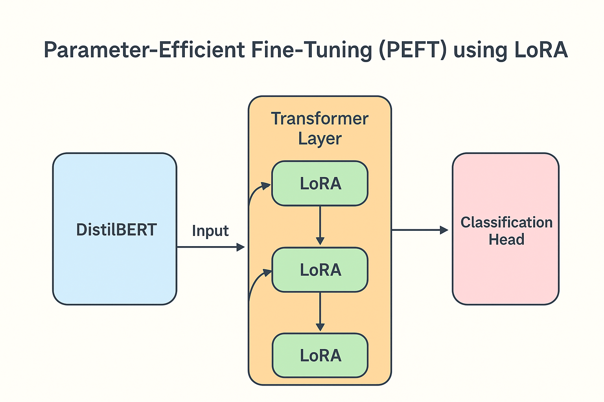

Basic Parameter Efficient Fine Tuning (PEFT)
An example of Parameter-Efficient Fine-Tuning (PEFT) by adding LoRA adapters to a Hugging Face TFDistilBertForSequenceClassification model – all in pure TensorFlow/Keras.

Process followed
- Took a pretrained DistilBERT model for text classification
- Froze most of the transformer layers to keep training efficient
- Injected LoRA adapters into only the last two transformer layers
- Fine-tuned on a small custom dataset with string labels
- Saved the model, tokenizer, and label map for later inference
- Perform inferening using the loaded model
Different ways to fine tune
- Self - supervised
- Supervised ✅
- Re-informcement learning
Different options for parameter tuning
- Retrain all parameters
- Transfer learning
- Parameter Efficient Fine-tuning(PEFT) ✅
Why Low-Rank Adaptation (LoRA)?
Instead of fine-tuning the entire 66M+ parameters, LoRA trains only a small fraction by learning low-rank updates. This makes:
- Training faster
- Memory-friendly
- Ideal for small datasets and CPU/GPU-constrained setups
LoRA (Low-Rank Adaptation) is just one of several Parameter-Efficient Fine-Tuning (PEFT) methods used to adapt large language models without updating all parameters. Other common approaches include:
Prefix Tuning – Learn special prefix tokens for each task while keeping the model frozen.
Prompt Tuning – Learn continuous prompt embeddings instead of discrete prompts.
P-Tuning v2 – Scales prompt tuning to deep models by inserting learned prompts in multiple layers.
Adapter Layers – Insert small trainable modules between transformer layers.
BitFit – Only fine-tune bias terms in the model.
These techniques trade off between training cost, parameter count, and task performance, making them great for edge devices or constrained environments.
Usage
Get a Hugging Face token
- Go to:
https://huggingface.co/settings/tokens - Create a new Read token
- Copy it
Create sample data
You are data generator. And you need to generate a training dataset on latest AI topics. Think about Jon and Sumit are talking about the latest AI topics and trends in different categories like (news, opinion, news, comparison) and you need to generate such 100 rows and the output data format as per below:
CORPUS = [
{"text": "Jon: Have you seen the latest Anthropic release? Sumit: Yes, it’s impressive.", "label": "news"},
{"text": "Jon: I think the new GPT update is overhyped. Sumit: I disagree, it’s useful.", "label": "opinion"},
]
Run the model
python model.py
flowchart TD
A[Start] --> B[Import Libraries & Data]
B --> C[Define LoRALayer class]
C --> D[Extract texts and labels from CORPUS]
D --> E[Create label map string->int]
E --> F[Convert labels to integers]
F --> G[Load DistilBERT tokenizer]
G --> H[Tokenize texts max_length=64]
H --> I[Convert to int32 tensors]
I --> J[Create tf.data.Dataset]
J --> K[Shuffle & Split into train and val sets]
K --> L[Load DistilBERT model with num_labels]
L --> M[Freeze base transformer layers]
M --> N[Inject LoRA into last 2 transformer layers]
N --> O[Make classification head trainable]
O --> P[Compile model Adam, CrossEntropy]
P --> Q[Train model]
Q --> R[Check if SAVE_DIR exists -> remove if yes]
R --> S[Save model & tokenizer]
S --> T[Save label_map.json]
T --> U[End]Perform prediction using save model
python serve.py
flowchart TD
A[Start] --> B[Load Tokenizer from MODEL_DIR]
B --> C[Load label_map.json]
C --> D[Invert label_map to inv_label_map]
D --> E[Load Trained DistilBERT Model from MODEL_DIR]
E --> F[Define predict_single]
F --> G[Encode text with tokenizer]
G --> H[Convert tensors to int32]
H --> I[Run model forward pass]
I --> J[Extract logits]
J --> K[Apply softmax to get probabilities]
K --> L[Find predicted class index]
L --> M[Map index to label using inv_label_map]
M --> N[Return label and confidence]